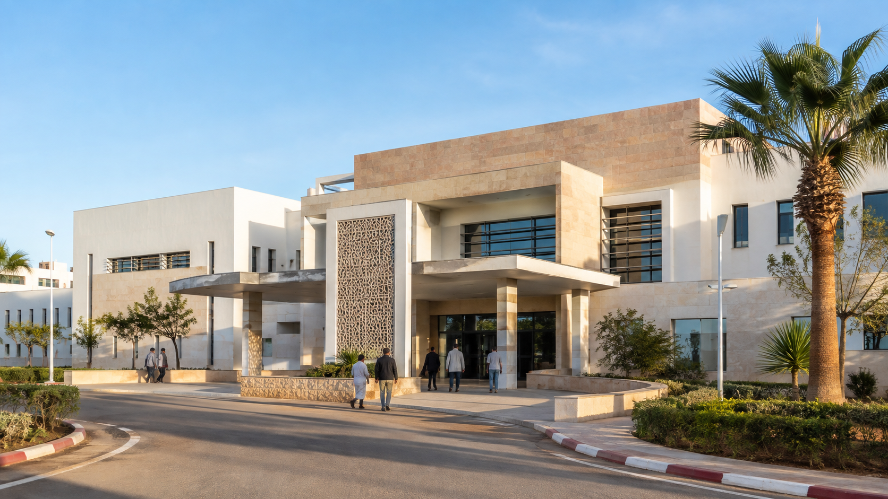
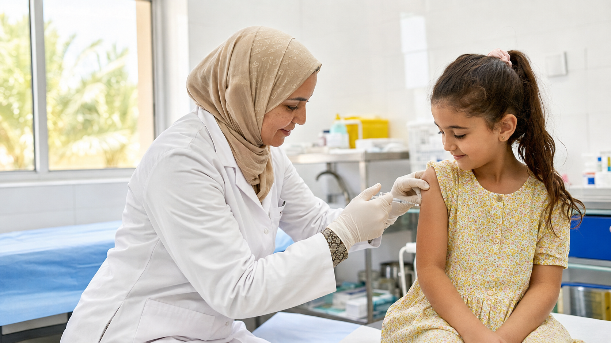
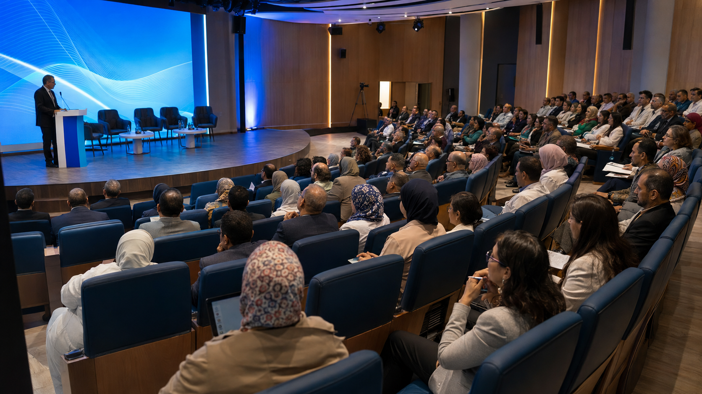
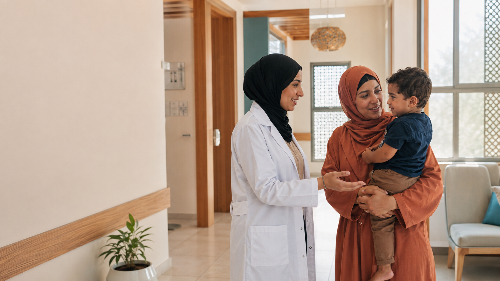

CommuniquéVotre santé,
notre territoire
Le Groupement Sanitaire Territorial de la Région Souss-Massa vous accompagne à chaque étape de votre parcours de soins.
Qui sommes-nous ?
Un établissement public régional au service de la santé
Créé conformément à la loi n° 08-22, le Groupement Sanitaire Territorial de la Région Souss-Massa est un établissement public doté de la personnalité morale et de l’autonomie financière. Il regroupe les établissements publics de santé de son ressort territorial et met en œuvre la politique de l’État en matière de santé à l’échelle régionale.
Actualités et événements
La vie du GST Souss-Massa
Actualités
Actualité régionale

Santé publiqueCampagne régionale de vaccination et de prévention

ÉvénementRencontres régionales de la santé Souss-Massa
Professionnels
Ressources humaines
Formation continue des équipes de santé

ProximitéRenforcement de l’accueil dans les structures de proximité
Institutionnel
Transformation régionale
Une offre de soins coordonnée au service du territoire
Votre parcours, simplement
Une santé accessible, humaine et coordonnée
Le GST Souss-Massa accompagne les patients et leurs proches avant, pendant et après la prise en charge, tout en soutenant la recherche qui améliore les pratiques et les parcours de soins.
⌖Un territoire, trois niveaux de soinsProximité, hospitalier et
hospitalo-universitaire
L’offre de soins dans votre territoire
Explorez le réseau de santé Souss-Massa
Choisissez une préfecture ou une province pour découvrir les principales structures qui organisent son parcours de soins.
Carte interactive · OpenStreetMap
Territoire sélectionné
Agadir
Hôpitaux universitaires Mohammed VI et Hôpital régional Hassan II